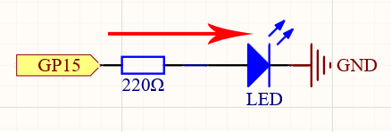

Note
Hello, welcome to the SunFounder Raspberry Pi & Arduino & ESP32 Enthusiasts Community on Facebook! Dive deeper into Raspberry Pi, Arduino, and ESP32 with fellow enthusiasts.
Why Join?
Expert Support: Solve post-sale issues and technical challenges with help from our community and team.
Learn & Share: Exchange tips and tutorials to enhance your skills.
Exclusive Previews: Get early access to new product announcements and sneak peeks.
Special Discounts: Enjoy exclusive discounts on our newest products.
Festive Promotions and Giveaways: Take part in giveaways and holiday promotions.
üëâ Ready to explore and create with us? Click [here] and join today!
2.1 - Hello, LED!¶
Just as printing “Hello, world!” is the first step in learning to program, using a program to drive an LED is the traditional introduction to learning physical programming.
Schematic

The principle of this circuit is simple and the current direction is shown in the figure. When GP15 outputs high level(3.3v), the LED will light up after the 220ohm current limiting resistor. When GP15 outputs low level (0v), the LED will turn off.
Wiring

Let us follow the direction of the current to build the circuit!
Here we use the electrical signal from the GP15 pin of the Pico board to make the LED work, and the circuit starts from here.
The current needs to pass through a 220 ohm resistor (used to protect the LED). Insert one end (either end) of the resistor into the same row as the Pico GP15 pin (row 20 in my circuit), and insert the other end into the free row of the breadboard (row 24 in my circuit).
Pick up the LED, you will see that one of its leads is longer than the other. Insert the longer lead into the same row as the end of the resistor, and connect the shorter lead across the middle gap of the breadboard to the same row.
Insert the male-to-male (M2M) jumper wire into the same row as the LED short pin, and then connect it to the negative power bus of the breadboard.
Use a jumper to connect the negative power bus to the GND pin of Pico.
Code
Note
You can open the file
2.1_hello_led.inounder the path ofeuler-kit/arduino/2.1_hello_led.Or copy this code into Arduino IDE.
Then select the Raspberry Pi Pico board and the correct port before clicking the Upload button.
After the code runs, you will see the LED blinking.
How it works?
Here, we connect the LED to the digital pin 15, so we need to declare an int variable called ledpin at the beginning of the program and assign a value of 15.
const int ledPin = 15;
Now, initialize the pin in the setup() function, where you need to initialize the pin to OUTPUT mode.
void setup() {
pinMode(ledPin, OUTPUT);
}
In loop(), digitalWrite() is used to provide 3.3V high level signal for ledpin, which will cause voltage difference between LED pins and light LED up.
digitalWrite(ledPin, HIGH);
If the level signal is changed to LOW, the ledPin’s signal will be returned to 0 V to turn LED off.
digitalWrite(ledPin, LOW);
An interval between on and off is required to allow people to see the change,
so we use a delay(1000) code to let the controller do nothing for 1000 ms.
delay(1000);